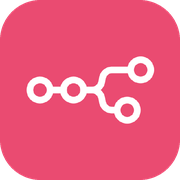
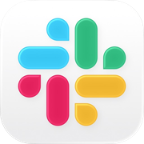
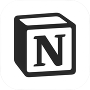
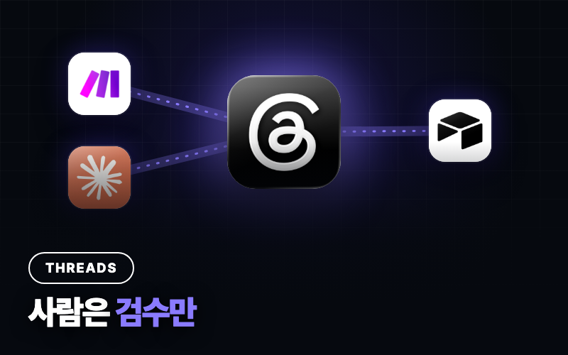
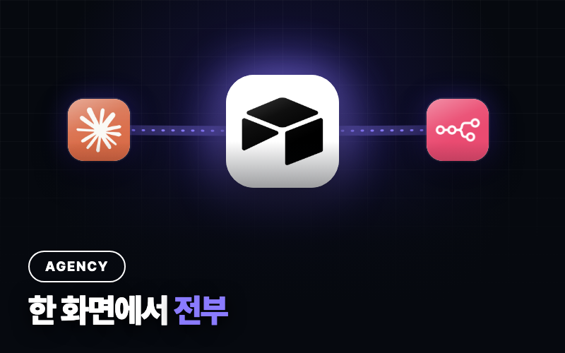
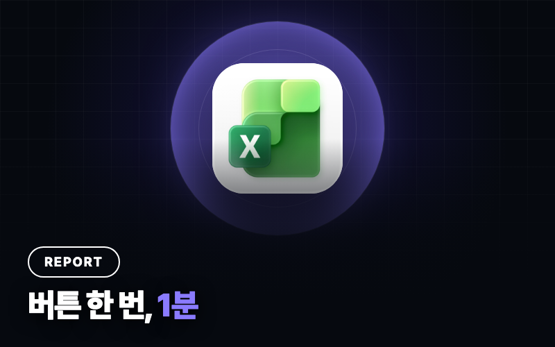
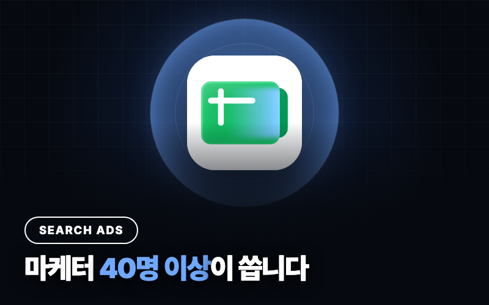
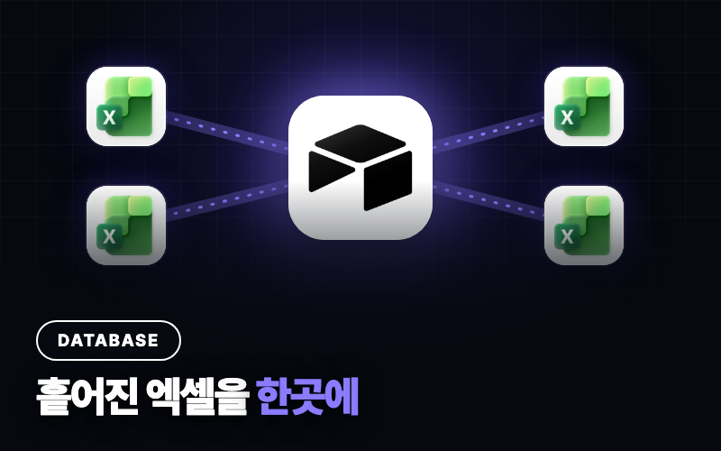

정해진 흐름을
사람 없이 돌리기
순서가 이미 정해진 일을 n8n으로 연결해요. 중간에 AI를 한 단계 끼워 분류나 요약을 맡기기도 해요.
- 흐름
- 매번 같은 순서로
- AI 역할
- 중간 한 단계 (분류·요약·변환)
- 예외
- 미리 정해 둔 경우만 처리
- 맞는 일
- 모양이 늘 같은 반복 업무
- 전제
- 자료가 들어오는 곳과 나갈 곳만 분명하면 돼요
가볍고 빠른 쪽 · 만드는 값도 더 쌉니다
마케터 출신현직 DX 자동화 담당
모으고 읽고 추려내는 일은 자동화와 AI 에이전트가 해요.
무엇을 할지 고르는 건 끝까지 사람 몫입니다.
상담은 무료예요 · 보통 하루 안에 답장드려요

n8n자동화
슬랙알림
노션결정연결은 알아서 돌아가고, 결정할 것만 올라와요
둘 다 사람 손을 줄이지만, 만드는 방식도 드는 비용도 달라요. 필요한 쪽만 만드는 게 가장 쌉니다.
순서가 이미 정해진 일을 n8n으로 연결해요. 중간에 AI를 한 단계 끼워 분류나 요약을 맡기기도 해요.
무엇을 중요하게 볼지 기준만 정해 주면, 어떤 자료를 어떤 순서로 볼지는 스스로 정합니다. 결론을 내리는 대신, 결정할 거리를 정리해 올려요.
상담에서 "이건 자동화면 충분해요"라고 말씀드리는 경우도 많아요. 비싼 쪽을 권하지 않습니다.
필요한 것부터 하나씩 만들어요. 아래 없는 업무도 상담해 드려요.
매체별 광고 관리자에서 수치를 복사해 보고서 양식에 붙여 넣어요
정해진 시각에 수치를 모아 같은 양식으로 채우고, 메일이나 슬랙으로 보냅니다
폼이나 메일로 문의가 오면 하나씩 옮겨 적고 담당자에게 알려요
접수 → DB 기록 → 담당자 알림 → 접수 확인 안내까지 자동으로 이어집니다
글 하나를 채널마다 다시 쓰고 하나씩 예약해요
승인된 원문을 채널 문법에 맞게 바꿔 예약 대기열에 초안으로 넣어 둬요
월요일마다 광고 관리자와 GA4에서 숫자를 옮겨 보고서를 만들어요
매체별 수치 취합 → 전주 대비 계산 → 이상 신호와 다음 액션 후보가 담긴 리포트가 도착해요
경쟁사 사이트, 광고, 트렌드를 시간 날 때 손으로 찾아봐요
정해둔 경쟁사와 키워드를 주기적으로 모아 변화와 적용 아이디어를 정리해 줘요
매주 무엇을 올릴지 회의하고, 캘린더를 손으로 채워요
트렌드와 지난 성과를 보고 다음 주 콘텐츠 후보와 초안을 캘린더에 올려 둬요
올리기 전에 톤, 금지어, 필수 문구를 사람이 매번 확인해요
브랜드 기준으로 콘텐츠를 채점하고, 고칠 곳과 수정안을 먼저 알려줘요
리뷰와 문의가 쌓이지만 다시 읽을 시간이 없어요
불만, 칭찬, 고객이 쓰는 표현을 분류해 카피와 상품 개선 아이디어로 정리해요
검증된 에이전트들을 하나의 일정으로 묶어요. 월요일 아침 한 번에 리서치 → 성과 분석 → 다음 주 기획이 돌고, 사람이 결정할 것만 모아서 알려줘요.
마케팅 외 반복 업무도 상담해 드려요.
실제로는 자료가 시트·노션·메일·메신저에 흩어져 있고, 같은 항목을 사람마다 다르게 적어 둔 경우가 대부분이에요. 그 상태에서 에이전트를 올리면 그럴듯한데 틀린 결과가 나오고, 틀린 걸 찾느라 손으로 하던 때보다 더 오래 걸립니다.
그래서 진단에서 데이터 상태부터 봐요. 정리가 필요하면 그 작업을 먼저 제안드리고, 이미 정리돼 있으면 바로 다음 단계로 갑니다. 안 되는 걸 된다고 하지 않아요.
자동화든 에이전트든 구조는 같아요. 모으고, 해석하고, 사람이 확인한 뒤 내보내요.
워크제로 계정의 콘텐츠 운영은 지금 이 구조로 돌아가요. 고객 사례가 아니라 제 일이라 그대로 보여드릴 수 있어요.
처음에는 한 덩어리였어요. 중간이 조용히 실패한 날 영상 하나를 통째로 놓쳤고, 그 뒤로 네 단계로 쪼개서 각 단계가 자기 몫만 책임지고 실패하면 바로 보이게 바꿨어요. 납품하는 것도 같은 기준으로 만듭니다.

외주 · 콘텐츠한의원 · 미디어 · 법무법인

외주 · 콘텐츠마케팅 대행사

회사 · 리포트퍼포먼스 마케팅 팀

회사 · 모니터링마케팅 조직 전체

회사 · 운영 시스템전기·기계·소방·정보통신 사업부
← 옆으로 넘겨 보세요
포트폴리오와 고객 평가를 거쳐 상위 2%로 엄선된 우수 서비스예요.
크몽에 공개된 구매 고객 후기입니다. 내용은 그대로 두고 오탈자만 바로잡았어요.
“정말 친절하시고 물어보는 모든 것들 끝까지 해결해 주시기 위해서 최선을 다하시고 무엇보다 결과물이 너무 깔끔합니다. 작업 생길 때마다 앞으로 계속 함께하고 싶습니다.”
JH***** · 크몽 구매 고객“이 분 최고의 전문가이십니다! 완벽하게 만들어 주셨습니다 생산성이 말도 안 되게 좋아질 것 같습니다”
K6***** · 크몽 구매 고객“복잡한 과정임에도 빠르고 정확하게 응대해주셔서 결과 또한 대만족입니다~ 감사합니다~!”
모든***** · 크몽 구매 고객“믿고 맡기시면 깔끔하게 일해주시네요”
긍정***** · 크몽 구매 고객“친절하시고 빠른 답변으로 작업하는 동안 만족했습니다!!”
멋있***** · 크몽 구매 고객처음에는 데이터를 읽고 분석하는 것까지만 맡겨요. 결과를 믿을 수 있을 때 다음 단계를 열어요.
광고비 변경, 외부 발행, 고객 응답은 초안으로 준비하고 승인한 뒤에 나가요.
같은 자료가 노션과 시트에서 따로 놀지 않게, 기준이 되는 저장소부터 정해요.
정상 작업은 기록만 남기고, 확인이 필요한 일만 알려드려요.
양식을 복사해서 DM이나 오픈채팅으로 보내요
데이터가 어디서 들어오고 어디로 나가야 하는지 같이 확인해요
순서가 안 잡혔으면 진단 콜을, 범위가 명확하면 바로 견적을 드려요
결제 링크를 보내드려요. 카드 결제도 돼요
계정 연동, 테스트, 예외 처리까지 진행해요
화상으로 보여드리고 운영 매뉴얼을 드려요
납품 후 7일 동안 기본 오류를 무상으로 확인해요
광고 계정 연결, 사이트 수집처럼 데이터를 가져올 수 있는지부터 확인해야 하는 일은 작은 시험 작업(PoC)으로 시작해요. 되는 걸 확인한 뒤에 본 작업을 정하니까, 비용만 쓰고 결과가 없는 일을 막을 수 있습니다.
기능 목록은 대부분 이미 머릿속에 있어요. 막히는 건 순서입니다. 지금 어느 단계인지만 알아도 다음에 뭘 할지가 정해져요.
흩어진 자료를 모으고, 같은 대상을 같은 이름으로
기준이 되는 저장소 하나로. 여기까지가 전체의 절반
정해진 흐름을 사람 없이 돌리기
읽고 추려서, 결정할 것만 올리기
대부분 1~2단계에 있는데 4단계를 만들려고 해서 막혀요.
WHERE TO START세 가지만 답해 보세요. 어느 단계부터 필요한지 바로 알려드려요.
쓰는 기술이 다르면 값도 달라요. 필요한 단계만 하면 됩니다. 어느 단계인지 모르겠으면 맨 아래 진단부터요.
흩어진 자료를 기준이 되는 저장소 하나로 모아요. 이미 정리돼 있으면 건너뜁니다.
필요할 때만 하는 단계예요
순서가 정해진 일을 n8n으로 연결해요. 중간에 AI를 한 단계 끼울 수 있어요.
모양이 늘 같은 반복 업무에 맞아요
기준을 정해 주면 결정 직전까지 맡아요. 예외 상황 설계와 승인 단계까지 포함합니다.
자료를 읽고 해석해야 하는 업무에 맞아요
검증된 에이전트 여러 개를 하나의 일정으로 묶고, 사람이 결정할 것만 모아서 올려요
기준이 바뀌면 같이 고치고, 실행 기록을 보며 매달 손봐요
진단부터 하셔도 돼요. 구축으로 이어지면 진단비는 전액 빼 드립니다.
사전 질문지를 받아 미리 읽고, 90분 동안 업무를 같이 분해합니다. 끝나고 3영업일 안에 정리 문서를 드려요.
구축으로 이어지면 진단비는 전액 빼 드려요
진단은 업종을 가리지 않아요. 마케팅이든 아니든 반복되는 업무면 됩니다. 그리고 안 되는 것도 그대로 말씀드려요 — 전화로만 들어오는 주문이나, 애초에 없는 물건을 찾는 일은 자동화가 안 됩니다.
AI 구독료와 연결하는 툴의 사용료는 고객님 계정에서 따로 나가요. 상담 때 예상 금액을 알려드려요. 마케팅 외 반복 업무도 같은 기준으로 상담해 드립니다.
대신 안전하게 운영할 수 있는 방법을 제안드려요.
그 상태가 가장 흔합니다. 기능은 이미 정해져 있는데 순서를 몰라서 멈춰 있는 경우가 대부분이에요. 진단 콜에서 업무를 같이 분해하고, 4단계 중 지금 어디인지와 다음에 할 일을 문서로 드립니다.
네, 오히려 그게 목적입니다. 순서와 할 일이 정해지면 직접 만드시는 분이 많아요. 문서는 그대로 쓰시면 되고, 중간에 막히면 그때 말씀하셔도 됩니다.
진단은 업종을 가리지 않아요. 유통·제조·서비스 어디든 반복되는 업무가 있으면 같은 방식으로 봅니다. 다만 실제 구축은 마케팅·콘텐츠 쪽이 가장 빠르고, 그 밖은 범위를 보고 말씀드려요.
대부분 상담에서 정해져요. 판단 기준을 글로 적을 수 있고 매번 같은 순서라면 자동화로 충분해요. "그때그때 보고 골라내야 한다"가 들어가면 에이전트 쪽입니다. 애매하면 진단부터 하시면 돼요.
만드는 일이 달라요. 자동화는 정해진 순서를 연결하면 끝이지만, 에이전트는 판단 기준을 글로 정의하고, 처음 보는 상황에서 어떻게 할지 설계하고, 어디까지 맡기고 어디부터 사람이 승인할지 선을 긋는 작업이 들어가요. 테스트도 "돌아가나"가 아니라 "이상한 걸 걸러내나"까지 봐야 해서 기간이 깁니다.
흔한 경우예요. 그 상태로 에이전트를 올리면 그럴듯하게 틀린 결과가 나와서, 데이터·DB 정리를 먼저 제안드립니다. 정리 작업만 하고 나중에 돌아오셔도 돼요. 반대로 이미 한곳에 정리돼 있으면 그 단계는 건너뜁니다.
네. 에이전트는 고객님 계정에서 돌아가요. 업무량에 맞는 요금제를 상담 때 같이 정해요. 자동화만 하는 경우에는 쓰는 만큼만 나가는 API 비용이라 훨씬 적습니다.
아니요. 처음에는 분석과 제안까지만 만들어요. 예산이나 소재를 바꾸는 일은 사람이 승인해야 실행돼요.
필요한 정보만 쓰고, 개인정보는 가리거나 빼고 분석해요. 접근 권한도 필요한 범위로만 열어요.
네. 업무 규칙과 Skill이 문서로 남아 있어서 문장만 고쳐도 바뀌어요. 직접 만들 수 있을 만큼 배우고 싶다면 1:1 과외도 있어요.
안전한 전달 방법을 따로 안내해요. 채팅으로 비밀번호를 보내지 않으셔도 돼요.
납품 후 2주 동안은 오류를 무상으로 대응해요. 그 뒤로도 계속 손봐야 하는 업무라면 월 운영을 붙이시는 편이 쌉니다.
네, 둘 다 가능해요. 상담에서 말씀해 주시면 범위·일정·금액을 적은 계약서를 먼저 드립니다.
상담은 무료예요. 되는 일과 안 되는 일을 솔직하게 말씀드려요.
양식을 DM이나 오픈채팅으로
가능 여부와 범위 확인
결제 링크 (카드 가능)
시연과 매뉴얼까지
[제작 문의] · 회사·업종: · 맡기고 싶은 마케팅 업무 (지금 어떻게 하고 있는지): · 지금 쓰는 툴 (예: GA4, 광고 관리자, 노션, 슬랙): · 결과를 받고 싶은 곳 (예: 노션, 슬랙, 메일): · 얼마나 자주 하는 일인지: · 희망 일정 / 예산 범위:
보통 하루 안에 답장드려요